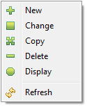

To start the Binding Directory Editor:
Use the context menu (right click) to maintain a binding directory entry. The full context menu is:

To change the order in which directory entries appear, highlight an entry and use the [Up] or [Down] button to move the entry up or down one position. Note that each click/move immediately changes the host.
| Note: Starting with iSphere v2.6.0 data area QGPL/ISPHERE is no longer needed and can be safely deleted. |